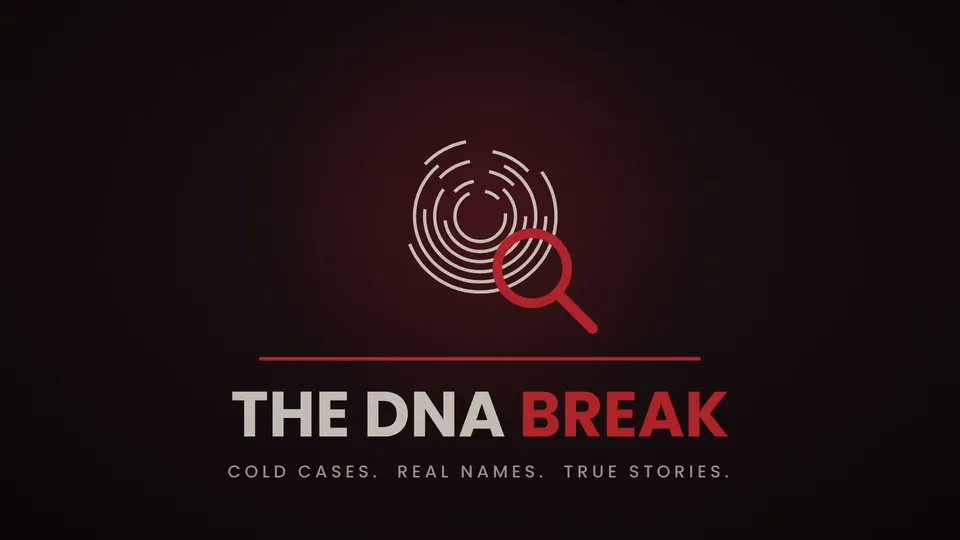
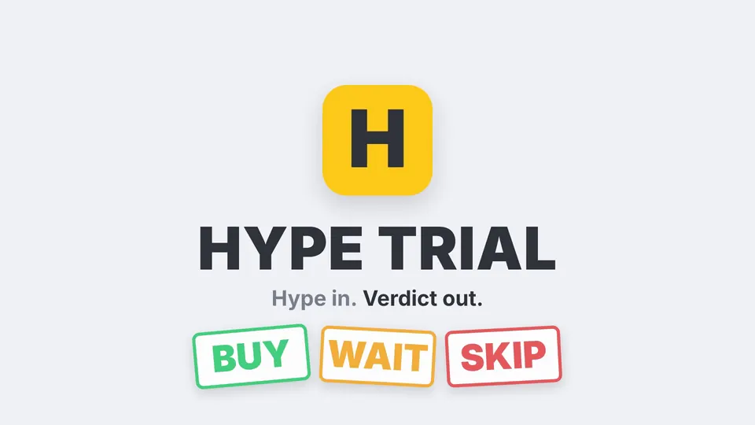
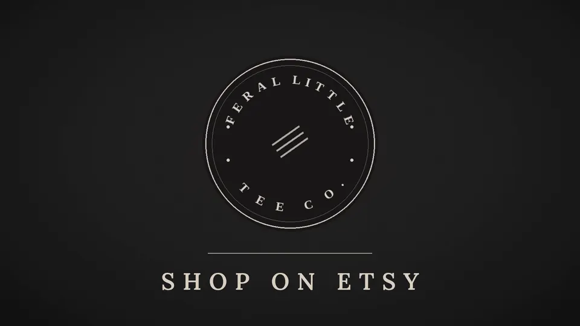
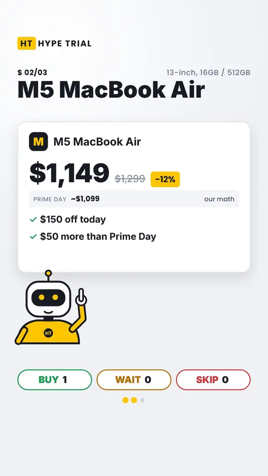
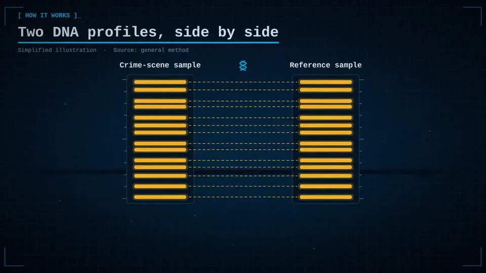
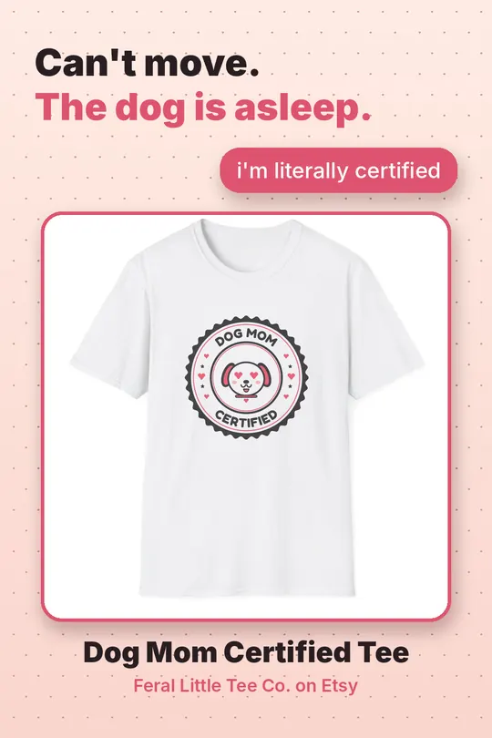

TheDNABreak
True-crime long-form breakdowns and Shorts on cold cases, DNA breakthroughs and verdicts, written only from court records and reputable reporting.
YouTubeFacebookInstagram
PlaTiNum Studio is one person running three faceless channels, a true-crime channel, a gadget-verdict channel and a graphic-tee shop, with Claude as the production crew. Everything that works goes into the playbook.

CASE FILE // TRUE CRIMETrue-crime long-form breakdowns and Shorts on cold cases, DNA breakthroughs and verdicts, written only from court records and reputable reporting.

VERDICT // GADGETSFaceless gadget verdict Shorts: is the viral product worth it? Each one ends in BUY, WAIT or SKIP.

SHOP // GRAPHIC TEESSoft graphic tees for the terminally online: dog moms, coffee-and-chaos people and science nerds.



A 20-page PDF playbook that shows how one person runs three faceless channels with Claude doing the production: the daily pipeline, the BUY / WAIT / SKIP product format, channel audits, SEO packs and three Claude skill templates. Free tools only, no income promises.
Get the playbookA free PDF with the ten rules that cost real views or real hours before they became rules, from running three channels every day.
Get the free guideThe daily pipeline is a set of written rules and scheduled tasks that Claude follows, so every video gets the same research, checks and SEO.
Every day: topic research, scripts, narration, assembly, captions, branding and full SEO packs for each platform.
Animated explainer diagrams, verdict cards and thumbnails generated in code, so there is no paid stock or editing software.
Fact-sourcing rules for true crime, a narration check against the script, loudness normalisation and frame checks before anything ships.
Hook, CTA and format tests that run for a set number of weeks, then a keep-or-drop decision based on real numbers.
PlaTiNum Studio is a one-person, build-in-public studio based in Singapore. It runs three faceless channels, TheDNABreak (true crime), Hype Trial (gadget verdicts) and Feral Little Tee Co. (a graphic-tee shop), with Claude doing most of the daily production: research, scripts, narration, editing and SEO.
Faceless Channel Autopilot is a 20-page PDF playbook that shows the exact system behind those three channels: the daily story-channel pipeline, a BUY / WAIT / SKIP format for product channels, a channel audit method, lessons from shipping every day, and paste-ready SEO and Claude skill templates.
Apart from Claude itself, no. The system uses free tools for narration, captions, editing and thumbnails, so you can start without an editing or software budget.
No. It shows a working system and the lessons from running it daily. Results depend on your niche, your topics and how consistently you publish.
Yes. 10 Hard Lessons from Shipping Every Day is a free PDF guide with the ten rules that cost real views or real hours before they became rules.
Daily lessons from running the channels, what broke and how it got fixed. Say hi in the DMs.